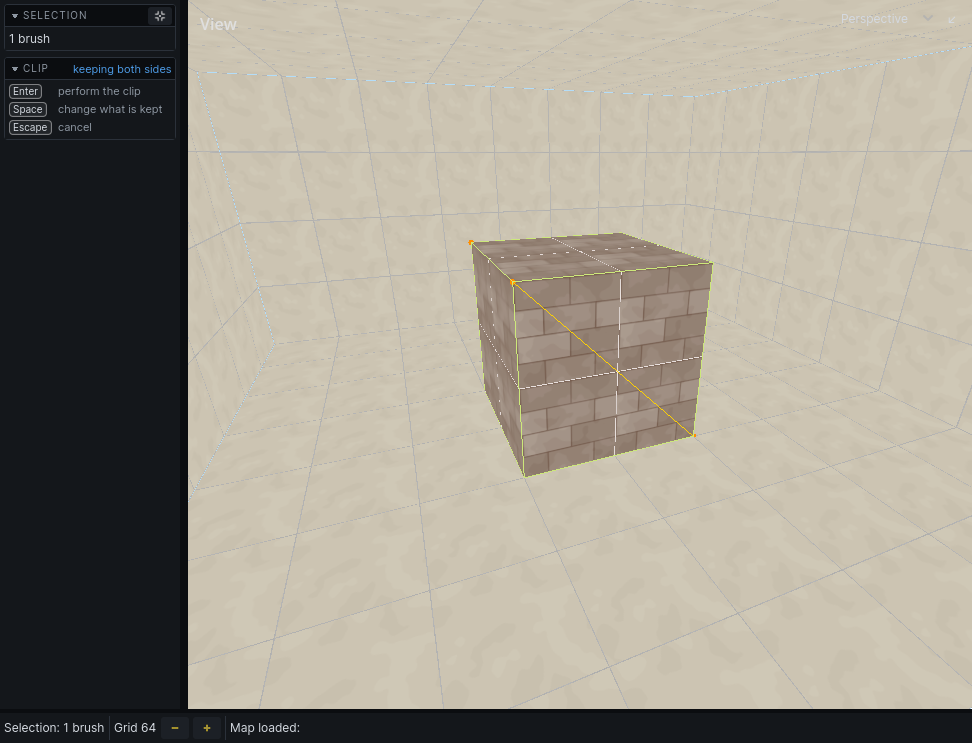
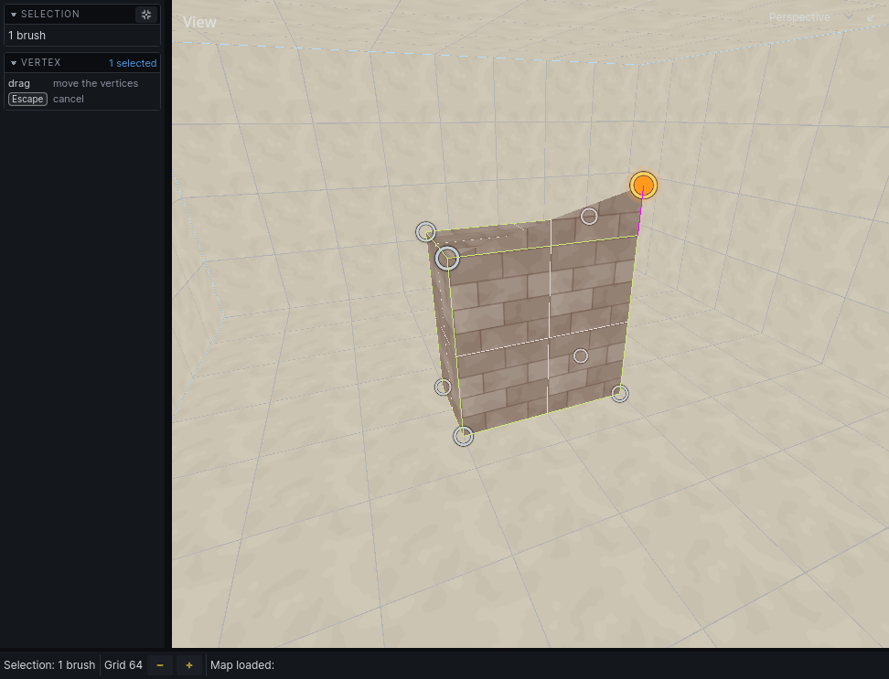

Editing
Edits go into one undo history: Cmd Z undoes, Cmd Shift Z redoes. Tools that take several steps undo their own steps while running, and add one step to the history when you finish.
A tool other than Select owns the plain letter keys while it runs. Press Esc to leave it before pressing another tool's key.
Move, rotate and scale
- Select brushes or entities.
- Press
Gto move,Rto rotate orSto scale. The selection follows the mouse. - Press
X,YorZto lock to that axis. Press it again to unlock. - Click to drop it, or press
Escto put it back.
Rotation snaps to 15°. Hold Shift for 45°, Ctrl for 5°. Alt-click moves the point it turns around.
Scaling stretches the selection about its centre, along the axes of the view you drag in, by the grid: drag 64 to the right and a room 256 across becomes 384, 64 wider on each side. Alt-click moves the point it stretches from. A prefab instance is scaled by editing its prefab.
Moving or rotating a room moves its textures with it while UV Lock is on. See Texturing.
Point entities that turn show a handle at the tip of an arrow when selected. Drag the handle to turn the entity.
Duplicate and delete
CmdDduplicates the selection and starts moving the copy. Click to drop it.Backspacedeletes the selection.
Mirror
Selection → Mirror on X, Y or Z flips the selection through its own middle. Entities in it move with the brushwork. Use it to make a left-handed copy of a doorway.
Clip
Cut brushes in two along a plane.
- Select the brushes to cut.
- Press
X. - Set the plane. The cut previews as you go.
- Drag along a surface: the cut runs along the line you drew, square to that surface.
- Or click three points on surfaces: the plane passes through all three.
- Or
Alt-click a face to cut along that face's plane. - Press
Spaceto choose what to keep: both sides, the side below, or the side above. The foot of the left panel says which. - Press
Enterto cut, orEscto cancel.
Hold Alt to highlight the face a plane would be taken from.

Extrude and push faces
Pull a face out into a new brush, or push it into its own.
- Hold
Qand click a face to select it. - Press
Eto extrude, orGto move the face. - Move the mouse. The distance shows on the face.
- Click or press
Enterto finish;Esccancels.
Or do it in one gesture from the Select tool: in face mode, press on a face, then drag with Shift held to move it or Alt held to extrude it.
Extruding outward adds a brush. Extruding inward cuts the face's own brush back.
With several faces selected, Space switches between moving them all the same distance (uniform) and each along its own direction (projected).
Vertices
- Select brushes.
- Press
V. Their corners show as handles. - Click a corner to select it;
Cmd-click to add more. In a 2D view, drag a box to select several. - Drag a selected corner to move it, or press
Gto move them with the mouse andX/Y/Zto lock an axis. - Press
Enterto keep the changes.
A brush pushed out of shape is split into convex pieces. Esc deselects the corners; Esc with none selected throws away every change and leaves the tool.

Merge
Select two or more brushes and press , to replace them with one brush wrapping them all. Cmd , keeps the originals.
The merged brush is convex, so it fills any gaps between the originals.
Bridge faces
Select faces and press Cmd F to build one brush spanning them.
Change a brush's tier
Choose a tier on the toolbar, select the brushes, and press U. See Building.
Grid and snapping
Moves, corners and new brushes snap to the grid. The status bar shows its size as Grid with − and + buttons; = makes it coarser and - finer, even while a tool is running.
While dragging, hold Shift to snap to twice the grid, Ctrl to a quarter.
Selection → Snap to Grid puts each selected brush and entity back on the grid, one by one.
Ctrl G shows or hides the grid on surfaces. 3D Grid in the 3D view's View dropdown shows a grid plane in that view.